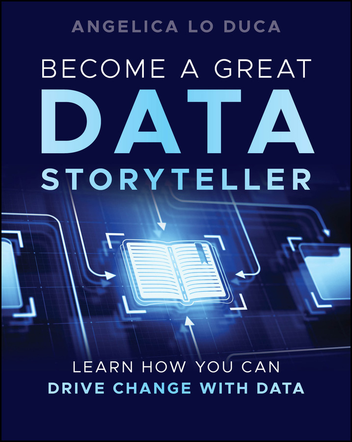

From data to narrative
Learn why data presentations often fail, and how story structure can make insights easier to understand, trust, and act on.
Learn how to turn data into stories people remember. Become a Great Data Storyteller shows how to move beyond charts and dashboards to build data-driven narratives with characters, conflict, structure, and purpose.

Learn why data presentations often fail, and how story structure can make insights easier to understand, trust, and act on.
Discover how to identify the hero, sidekick, problem, and antagonist hidden inside your data.
Shape the same story differently depending on what your audience wants, knows, and thinks.
The book starts from a simple question: why do some data presentations get ignored while others create change? The answer is not only better charts, but stronger storytelling.
“You’ll discover your role as a narrative guide, learning how to employ the power of context to make your data-driven stories not just informative but captivating.”Publisher description
Transform analytical work into stories that stakeholders can follow and use.
Bring together narrative, audience empathy, and evidence in one repeatable process.
Use data stories to align people around a problem, a message, and a next step.